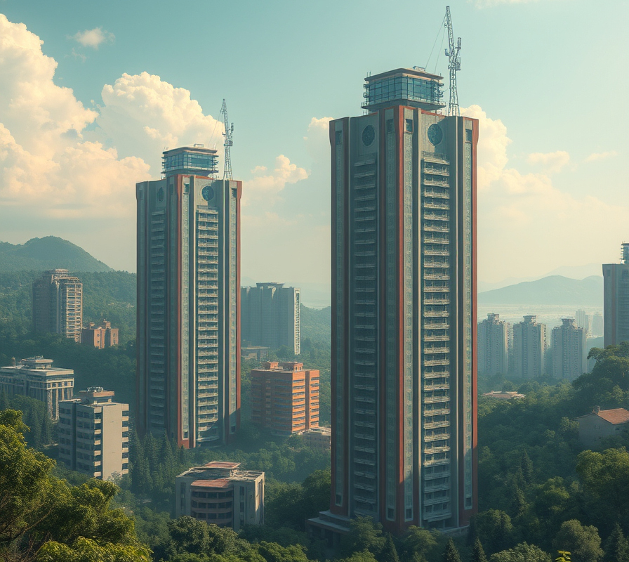
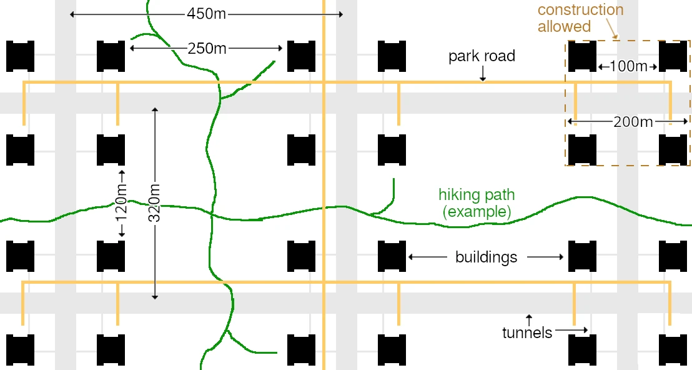
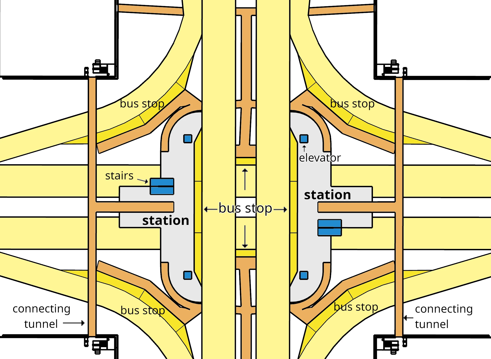
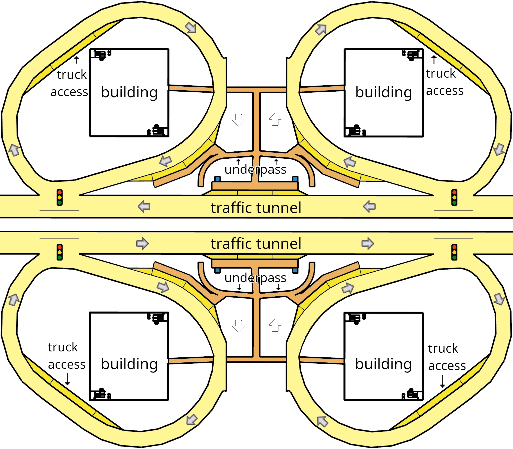
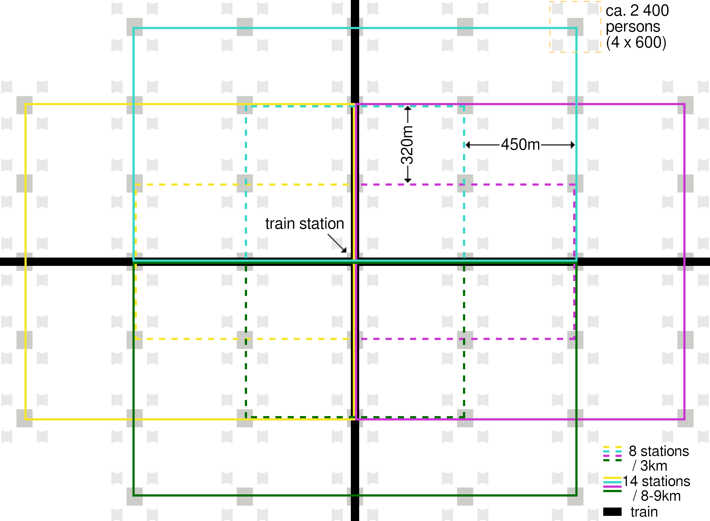

9. Living
9.3 Cities
Now, the topic of “living” doesn’t end at your own four walls, nor at the building that contains them. The building is located in a city or a village. And here too, we want to consider how we would build cities and villages from scratch, as a goal to aim towards when making changes.
It seems obvious to me that cities would be far more livable and environmentally friendly if their residential and work spaces were concentrated in a few large buildings with plenty of green space in between, rather than covering the entire urban area with low-rise buildings and paving the gaps with roads. That is a key reason why my futurity of a house in 9.2 is such a large building. So let’s turn to a new design for cities, because there is so much potential here for something better.
Searching online for “solarpunk” turns up many images of what large buildings surrounded by nature could look like. One example:

There are still access roads to these buildings, but they force drivers to go slowly by means of speed bumps and may only be used for specific purposes (e.g., for construction work or to bring container apartments to buildings). Otherwise, above ground only pedestrians and cyclists are allowed. Normal traffic takes place entirely underground, where it can be distributed across multiple tunnel levels.
This creates a great deal of space on the surface for green areas without road noise. The city is thus more like a park dotted with buildings.

The building plots for the high-rises are arranged in groups of four, and they are privately owned or leased from the state (see 9.5). The rest of the city area is administered by the city.
Structure of the city area: Each high-rise has a maximum footprint of 50m × 50m. Within each group of four, the building centers are 150m apart. Between the groups of four, this distance is 300m in one direction, 170m in the other. This means there is always at least 100m of open space between two high-rises. So despite their great height, the buildings block hardly any of each other’s daylight.
Buildings may only be constructed within the groups of four. Outside the high-rises, nothing with deep foundations may be built, and development has to fit around the tunnels and underground stations.
About 7% of the city area is built up with high-rises, and another 6% is taken up by park roads and hiking trails. About 21% of the city area lies within the groups of four (excluding the high-rises themselves), and I think roughly 35% of that (7% of the city’s total area) will also be built up.
The remaining 80% of the city area (100% − 7% high-rises − 6% paths − 7% built up) can be landscaped as green space—trees and meadows.
Population density: The area shown in the image (3×2 groups of four high-rises) accommodates 14,400 inhabitants (3×2×4×600) on an area of 1350m × 640m (0.864km²), thanks to the three-dimensional city design. That corresponds to a population density of over 16,000 inhabitants per square kilometer, even though most of our city area is green space!
For comparison: Berlin has a little over 4,000 inhabitants/km², New York about 11,500. The city designed here would easily rank among the top 100 most densely populated cities in the world.
The open space within the groups of four can be used for outdoor facilities such as swimming pools or sports fields. But a city center with a market square, fountains, coffee shops, narrow pedestrian alleys between low-rise buildings, and small shops would also be an option.79 It should not simply be additional residential or commercial space—that belongs in the high-rises. Instead, the space should be used for something that benefits all residents and works better under the open sky. That’s why the residents of the surrounding high-rises should have as much say as possible in how this area is used.
As a resident of a building in this city, you therefore not only have a green open space right outside your apartment door (9.2). If you take the elevator down to the ground floor and step outside, you are also immediately surrounded by greenery (or, in the other direction, at a swimming pool, sports field, or small city center).
From each high-rise’s basement levels, two connecting tunnels lead to two different traffic tunnels and thus to the underground road network (avoids problems if a traffic tunnel segment or a connecting tunnel is closed—for example due to construction work). In addition, the four grouped high-rises are directly connected to each other underground via these connecting tunnels. Because of the ring-shaped structure, this remains true even if one connecting tunnel becomes unusable.
My 30-story reference building houses 600 people; a group of four high-rises thus 2,400. Others work on the remaining ten floors of each high-rise. Perhaps there is even a school in one of the buildings. Either way, that is more than enough to justify a bus stop.


Here is a view of the underground area at the center of a group of four high-rises. The connecting tunnels start in the walls of the buildings. From the midpoints of the connecting tunnels, there is access to the bus stops. The two traffic tunnels (north–south and east–west) run on two different levels, stacked above each other. The upper traffic tunnel passes through the underground station and divides it into two halves, which are connected by underpasses. Stairs lead from the station up to the surface, unless you want to reach one of the surrounding four buildings via the connecting tunnels.
These stations are the only places in the city where you are exposed to road-traffic noise—which will largely come from buses and trucks. The traffic tunnels running north–south and east–west have two or three lanes. That way, a broken-down vehicle doesn’t block the tunnel, and dedicated turning and merging lanes are possible.
The ring-shaped ramps allow traffic to switch between the two tunnel levels. Traffic lights control these “T” intersections, while traffic in the left lane of the main tunnels can continue without interruption.
The ring-shaped ramps also provide an underground access route for trucks to the high-rises, to deliver or pick up larger quantities of goods. Each high-rise has a stairwell and elevators in that corner of the building, to serve the truck access.
For the train station in the center of the city, the simplest approach would probably be to route the tracks below the normal traffic tunnels. This way, the station in the city center can use all its space for buses, while the trains stop on deeper levels. Here too, the same applies again: three-dimensional design is far superior to a design on only one level.
One more thing I want to show is what the implementation of the futurity for public transportation I presented in Chapter 8.2 might look like here. The next image shows a larger city, with its train station in the center and the bus lines around it, which are served at high frequency by self-driving buses.

example bus routes and rail lines (45 stations, 108,000 residents, 6.5km²)Each line forms a rectangle and passes through the city center, the train station. The bus lines from the surrounding villages also all head to this train-station stop.
Because every line runs through the train station, every bus stop in the city can be reached with a single transfer, and every high-rise is directly connected to the train station by a bus line. The city’s high population density keeps these routes short and allows a very high bus frequency: a bus every five minutes is completely unproblematic. Thanks to stacked tunnels and almost no private traffic, there are no traffic jams. In other words: by bus and train, you can reach any point in this city very quickly and efficiently.
If each individual high-rise offers many amenities in itself and is surrounded by large green areas, if everything else is close by and quickly reachable due to the high population density and the excellent public transit network, then another major problem of modern cities dissolves too: the absurd rent prices for apartments in good locations. In the city designed here, every apartment is in a good location! There will of course still be more popular high-rises and more popular floors, but the price differences will be much smaller than they are today. With this city design, supply can keep up with demand, leading to competition over building amenities and the price of container slots. The housing market will be much more fluid thanks to the container-apartment system, since relocating to another building is far less effort. Even entire neighborhoods can relocate together—per container, that should even be significantly cheaper than relocating a single container apartment.
What can we do to maximize the resiliency of our houses and our city, so that it can withstand adversity as well as possible?
Whether artillery attacks and air strikes in a war, earthquakes, acts of sabotage, or other completely unexpected crises: the houses and the city as a whole should be as good at absorbing them as we can manage. Only starting to worry about it once the crisis is here is too late.
Wildfire: Because the city is located in the middle of a forest, wildfires are a particularly serious danger. Thanks to their building materials, our high-rises are fortunately highly fire-resistant: Their exterior facade and load-bearing structure are made of steel, glass, and concrete. Their ventilation systems are good enough to prevent smoke from entering the building. And in the landscaping around the high-rises, we can make sure that fires don’t find enough fuel there to become dangerous to them—for example, by having areas cleared of underbrush.
Cars: The fact that in this city design there are no pedestrian paths alongside car lanes, no cars in city centers, and generally no mixing of car traffic and pedestrians enormously increases safety for pedestrians—both with regard to terror attacks and ordinary accidents.
Drones: That the city infrastructure relies on the capsulenet instead of delivery drones makes defense against drones easier.[51]
One clear advantage these high-rises already bring in crises is that they have to meet significantly higher safety standards. In addition, I paid attention to redundancy* in the design of the building and the city:
• Stairwells and elevators are built in duplicate, in opposite corners of the building
• Each apartment has two escape routes
• All power, water, and data lines in the high-rise are designed redundantly (even if my architectural drawing is not detailed enough to show this)
• Each building has two connecting tunnels to two traffic tunnels and to the other three high-rises in its group of four
• The high-rises are far enough apart that problems in one high-rise (such as a fire) do not spread to other high-rises
• They have a built-out protected basement that residents can retreat to in emergencies (appendix “Floor Plans”)
Thanks to these features, residents of the city should be able to cope with disasters far better than is currently the case in Western industrialized countries. The education system, of course, makes a decisive contribution here: only if people keep a cool head in an emergency will they act correctly. We give them as many tools as we can for that.
I want to emphasize one advantage of protected basements, underground traffic tunnels, and networked high-rises in particular: Modern cities make for excellent defensive positions in general. We don’t have a dense sea of buildings here—but we do have buildings constructed from very resilient materials and, thanks to the basements and tunnels, cities that are difficult to conquer. In an emergency, each high-rise can turn into its own fortress.
I don’t want to go further into how a society should best invest its defense budget. But with good planning, it is far cheaper to build up a defensive army than an offensive army of comparable strength—at least to the point where an attacker loses interest in an invasion.[52]
Being able to defend yourself well isn’t only very helpful if your country is invaded: good preparation can prevent an invasion and thus spare the whole society great suffering.
Let’s step back from this look at emergencies and return to normal life in the city one more time. What might it look like? For someone who lives in this city—in a container apartment, in a neighborhood, in the house I presented—how would their life differ from life in our urban living environment today?
Let’s imagine a fictional example. We want to look at Sarah’s life. Sarah is single and lives in a one-container apartment in a neighborhood in the city I designed. She works in an office. In her free time she does theater, likes to get out into nature, spends time with her friends, and keeps fit with yoga.
Sarah lived in another city before she found the job here. So for a while, she simply lives in the same high-rise that also contains her office.
Over time, she makes new friends through the theater group. Some of them live in a neighborhood in a high-rise about 700 meters away,80 with an open space in front of their apartments—the one whose image was shown from a bird’s-eye view in 9.2 as an example.
After spending many lovely evenings there with her friends and getting to know more and more other people in that neighborhood as well, she decides to relocate. She rents a free container slot in that neighborhood and, for a few hundred euros, has her container moved.
Since then, she has a short walk through greenery to get to work, which doesn’t bother her at all. In return, she now has good friends in her neighborhood and feels very comfortable in her surroundings. She starts every morning with yoga on the meadow in front of her apartment, and two of her friends have begun to join her. In the evening, she and her friends often visit each other. For example, to watch a movie. But most of the time, they’re outside in the open space rather than in one of the apartments. Be it for a shared dinner, theater rehearsals, or simply to sit together and relax. That’s the nice thing about the open space being covered: it can be used just as well in winter and in the rain.
When the weather is good and she wants to be by herself, she likes to go on long hikes—either starting right outside her front door or after a short bus ride to another starting point.
Sarah doesn’t own a car. First, it would be far too expensive. Second, this high-rise doesn’t even have an underground parking garage. And third: what would she need it for? Small errands are handled via the capsulenet. If she wants to go shopping, there is a high-rise a few hundred meters from hers where the lowest two floors form a large shopping mall. Many shops there specialize in letting you try things on, test them out, and sample them, to stand out from online retail. If she ever has purchases that are large and bulky, she can easily bring them home by bus. In theory, she could rent a car of the desired size, enter the destination on a touchscreen, and be driven there. But why? By bus and train, she can get to every corner of the entire country easily, quickly, and free of charge.
Review of Requirements
|
Requirement |
Features of this Futurity |
|
low demands on people’s character |
• monitoring the rules (construction requirements, road use, …) is very feasible • Villages exist as alternatives |
|
no world government |
unproblematic |
|
costs considered |
• high efficiency thanks to population density, lower infrastructure costs per citizen • since all locations are good, no absurd rent prices for apartments in good locations |
|
automatic adaptation to a changing world |
no: Cities are physical infrastructure that has to be built |
|
help citizens keep up with change |
• more relaxing environment: the city is a park dotted with high-rises |
|
promote technological development |
not relevant |
|
resilience to withstand adversity |
• underground traffic network • each group of four high-rises is connected underground as a ring • distance between high-rises isolates problems |